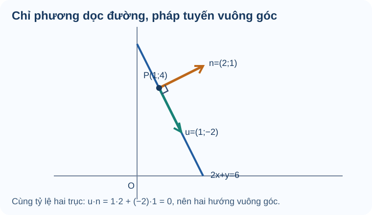

Bài 19. Phương trình đường thẳng
TOÁN 10 · CHƯƠNG VII · KIẾN THỨC SGK KNTT
1. Khám phá kiến thức
Cùng tìm hiểu
Trong hình học, ta biết một đường thẳng có thể đi qua hai điểm. Nhưng nếu muốn tìm tất cả các điểm nằm trên đường ấy bằng phép tính, ta cần diễn tả đường thẳng bằng một phương trình. Khi đó, việc kiểm điểm thuộc đường hay xác định giao điểm trở thành một bài toán tọa độ.
Hãy hình dung một đường trên bản đồ. Chỉ một điểm trên đường chưa nói được đường chạy theo hướng nào. Ta cần thêm một mũi tên chỉ hướng dọc đường (vectơ chỉ phương), hoặc một mũi tên chỉ hướng vuông góc với đường (vectơ pháp tuyến). Hai cách mô tả ấy dẫn đến hai dạng phương trình khác nhau nhưng biểu diễn cùng một tập hợp điểm.
Trước khi dùng công thức, em chỉ cần nhớ tọa độ một vectơ, phép cộng vectơ, tích vô hướng của hai vectơ và cách kiểm hai vectơ vuông góc. Ta sẽ bắt đầu từ hình vẽ, lập điều kiện cho tọa độ rồi mới rút ra quy tắc.
Ví dụ trực quan
1.2.1. Hai vectơ cho biết hướng của đường thẳng
Khi nhìn một đường thẳng, em có thể chọn một mũi tên nằm dọc theo đường để chỉ hướng đi. Đó là vectơ chỉ phương. Một mũi tên vuông góc với đường được gọi là vectơ pháp tuyến. Cả hai đều phải khác vectơ không, vì một mũi tên không có độ dài thì không xác định được hướng.

Cách đọc hình: Điểm P(1;4) nằm trên đường \(2x+y=6\). Từ P, mũi tên \(\vec u=(1,-2)\) đi sang phải một đơn vị và xuống hai đơn vị nên nằm dọc đường; mũi tên \(\vec n=(2,1)\) vuông góc với nó. Thật vậy, \(\vec u\cdot\vec n=2-2=0\). Em hãy nhìn dấu góc vuông và chiều của hai mũi tên, không chỉ đọc tên của chúng.
Nếu đã biết pháp tuyến \(\vec n=(a;b)\), ta có thể chọn chỉ phương \(\vec u=(-b;a)\): tích vô hướng bằng \(a(-b)+ba=0\). Ta chỉ đổi vai trò hướng, chứ không đổi đường thẳng. Với \(a,b\) không đồng thời bằng 0, hai vectơ vừa chọn đều khác vectơ không.
Vận dụng. Cho \(\vec n=(2;3)\) là một vectơ pháp tuyến của đường thẳng d. Vectơ \(\vec u=(-3;2)\) có phải là vectơ chỉ phương của d không? Hãy tính tích vô hướng và kiểm \(\vec u\ne\vec0\).
Đối chiếu
Đáp án: Có, vì n·u=2(-3)+3(2)=0 và u≠(0,0).
Lý do: Tích vô hướng bằng 0 chứng minh u vuông góc với pháp tuyến n, tức song song với đường thẳng d; u không phải vectơ không.
Nếu chưa đúng: Mở hướng dẫn tự sửa ngay bên dưới, xem lại bước còn vướng rồi thử một câu cùng kiến thức.
Kiểm lỗi
- Nhận diện lỗi: Dùng n làm chỉ phương mà không xét góc giữa hai hướng.
- Tự chẩn đoán: Trong câu n=(2;3), u=(-3;2), hãy tính n·u. Hai mũi tên cần nằm dọc hay vuông góc với đường?
- Kiến thức gốc: Chỉ phương dọc đường, pháp tuyến vuông góc; chúng khác 0 và có tích vô hướng bằng 0.
- Tự sửa: Tính 2×(-3)+3×2=0, đánh dấu u và n trên hình ở Khám phá.
- Luyện lại: Luyện Core 19-C01
1.2.2. Từ một điểm và pháp tuyến đến phương trình tổng quát
Chỉ biết một điểm A chưa đủ để xác định đường thẳng, vì có vô số đường đi qua A. Khi biết thêm pháp tuyến \(\vec n=(a;b)\ne\vec0\), ta nhận ra mọi điểm M trên đường đều có độ dời \(\overrightarrow{AM}\) vuông góc với \(\vec n\).
Nếu \(A(x_0;y_0)\), \(M(x;y)\), thì \(\overrightarrow{AM}=(x-x_0;y-y_0)\). Điều kiện tích vô hướng bằng 0 chính là \(a(x-x_0)+b(y-y_0)=0\). Khai triển sẽ cho dạng \(ax+by+c=0\). Cách viết này giúp em hiểu các hệ số bắt nguồn từ đâu, thay vì thuộc một công thức rời rạc.
Khi làm bài, hãy thay tọa độ A vào phương trình cuối cùng. Nếu kết quả khác 0, chắc chắn đã có lỗi chuyển dấu hoặc thay số.
Vận dụng. Lập phương trình tổng quát của đường thẳng đi qua \(A(1;3)\) và có pháp tuyến \(\vec n=(2;-1)\). Em hãy viết từ tích vô hướng rồi kiểm lại tọa độ A.
Đối chiếu
Đáp án: 2(x-1)-(y-3)=0 hay 2x-y+1=0.
Lý do: AM=(x-1,y-3), n·AM=2(x-1)-(y-3); thế A được 0. Không tự đảo vai trò n với vectơ chỉ phương.
Nếu chưa đúng: Mở hướng dẫn tự sửa ngay bên dưới, xem lại bước còn vướng rồi thử một câu cùng kiến thức.
Kiểm lỗi
- Nhận diện lỗi: Phương trình cuối cùng không chứa A như giả thiết.
- Tự chẩn đoán: Với A(1;3), n=(2;-1), hãy thử thế A vào phương trình vừa lập: vế trái có bằng 0?
- Kiến thức gốc: Qua A có pháp tuyến n thì n·AM=0; phải dùng x-xA, y-yA, không đảo dấu tùy ý.
- Tự sửa: Viết 2(x-1)-(y-3)=0, khai triển rồi thử lại tọa độ A.
- Luyện lại: Luyện Core 19-C02
1.2.3. Vì sao phương trình tham số cần một vectơ chỉ phương?
Có lúc ta muốn biết một điểm có thể nằm ở đâu khi đi dọc theo đường thẳng từ A. Nếu \(\vec u\) chỉ hướng đi thì mọi vị trí trên đường thẳng kéo dài hai phía có thể viết \(M=A+t\vec u\), với \(t\) là một số thực.
Khi \(t=0\), ta đang ở A; \(t=1\) đưa ta đến \(A+\vec u\); \(t=-1\) đi ngược hướng mũi tên một lần. Tham số t không bắt buộc là thời gian: nó chỉ cho biết số lần nhân vectơ chỉ phương. Hai tọa độ x, y phải dùng cùng một t vì chúng mô tả cùng một điểm M.
Đây là lý do để có dạng tham số: từ một điểm và một hướng, ta tạo ra được cả đường thẳng; còn dạng tổng quát nhận biết điểm thuộc đường qua một điều kiện.
Vận dụng. Viết phương trình tham số của đường thẳng qua \(A(1;-1)\), nhận \(\vec u=(-2;3)\) làm vectơ chỉ phương. Em hãy thử \(t=0\) và \(t=1\) để kiểm lại.
Đối chiếu
Đáp án: x=1-2t, y=-1+3t (t∈ℝ).
Lý do: Khi t=0 thu A; khi t=1 thu A+u=(-1,2). Mọi điểm thuộc đường có độ dời t·u.
Nếu chưa đúng: Mở hướng dẫn tự sửa ngay bên dưới, xem lại bước còn vướng rồi thử một câu cùng kiến thức.
Kiểm lỗi
- Nhận diện lỗi: Dùng t cho x nhưng một hệ số độc lập khác cho y, hoặc t=0 không về A.
- Tự chẩn đoán: Với A(1;-1), u=(-2;3), thử t=0 và t=1 có cho đúng A, A+u không?
- Kiến thức gốc: Một điểm M=A+t·u cần cùng t thực cho cả hai tọa độ; t không nhất thiết là thời gian.
- Tự sửa: Viết x=1-2t, y=-1+3t rồi thử hai giá trị t.
- Luyện lại: Luyện Practice 19-P01
1.2.4. Khi chỉ biết hai điểm trên đường
Nếu có hai điểm phân biệt A, B, đoạn nối chúng cho ta ngay một hướng: \(\overrightarrow{AB}\). Vectơ này khác 0 vì \(A\ne B\). Vì thế đường AB có thể được viết ở dạng tham số từ A và \(\overrightarrow{AB}\), hoặc ở dạng tổng quát sau khi chọn một pháp tuyến vuông góc với \(\overrightarrow{AB}\).
Chẳng hạn, nếu \(\overrightarrow{AB}=(p;q)\), ta có thể lấy pháp tuyến \(\vec n=(q;-p)\). Để tự kiểm, đừng chỉ thế A: cả A và B đều phải thỏa phương trình tìm được. Nếu A trùng B, một điểm không đủ xác định duy nhất một đường thẳng nên không được dùng công thức như thể đã biết hướng.
Vận dụng. Cho \(A(-1;2)\), \(B(2;5)\). Hãy lập một phương trình tổng quát của đường AB bằng vectơ \(\overrightarrow{AB}\) và thử lại cả hai điểm.
Đối chiếu
Đáp án: x-y+3=0.
Lý do: AB=(3,3)≠0, chọn n=(1,-1). Qua A: (x+1)-(y-2)=0 ⇒ x-y+3=0; thế B: 2-5+3=0.
Nếu chưa đúng: Mở hướng dẫn tự sửa ngay bên dưới, xem lại bước còn vướng rồi thử một câu cùng kiến thức.
Kiểm lỗi
- Nhận diện lỗi: Lấy vectơ nối hai điểm làm pháp tuyến rồi đường mới không đi qua B.
- Tự chẩn đoán: Với A(-1;2), B(2;5), AB=(3;3) đi dọc hay vuông góc AB? Tại sao n=(1;-1) mới là pháp tuyến hợp lệ?
- Kiến thức gốc: Hai điểm phân biệt tạo chỉ phương AB; pháp tuyến phải khác 0 và vuông góc với AB.
- Tự sửa: Kiểm n·AB=0 rồi lập phương trình qua A và thế lại B.
- Luyện lại: Luyện Practice 19-P02
1.2.5. Làm thế nào kiểm một điểm có thuộc đường?
Một phương trình đường thẳng mô tả toàn bộ những cặp tọa độ nằm trên đường đó. Do vậy, để kiểm một điểm \(M(x_M;y_M)\), ta thay đúng hai tọa độ vào vế trái của \(ax+by+c=0\). Kết quả bằng 0 thì M nằm trên đường, khác 0 thì M không thuộc đường. Không thể dựa vào cảm giác điểm đó “gần đường” trên hình.
Chú ý dấu âm của hệ số khi thay. Với hai điểm, em thực hiện hai phép thử độc lập, tránh dùng kết quả của điểm này để kết luận cho điểm kia.
Vận dụng. Cho \(d:2x-3y+1=0\), \(M(1;1)\) và \(N(2;1)\). Điểm nào thuộc d? Hãy thế từng cặp tọa độ vào phương trình.
Đối chiếu
Đáp án: M thuộc d vì 2-3+1=0; N không thuộc vì 4-3+1=2.
Lý do: Điểm thuộc là nghiệm của phương trình theo cặp tọa độ. Đây là phép thử hai lần độc lập.
Nếu chưa đúng: Mở hướng dẫn tự sửa ngay bên dưới, xem lại bước còn vướng rồi thử một câu cùng kiến thức.
Kiểm lỗi
- Nhận diện lỗi: Chỉ thay hoành độ hoặc biến -3y thành +3y.
- Tự chẩn đoán: Cho d:2x-3y+1=0, kiểm riêng M(1;1) và N(2;1). Hai kết quả phải là 0 và 2.
- Kiến thức gốc: Cặp tọa độ thuộc đường khi thế vào vế trái cho đúng 0, không cần đo bằng hình.
- Tự sửa: Viết đầy đủ 2x-3y+1 cho từng điểm, đặt ngoặc và tính dấu.
- Luyện lại: Luyện Practice 19-P03
1.2.6. Mở rộng: giao điểm khác với quan hệ vuông góc
Nếu hai đường thẳng có chung một điểm I thì tọa độ I phải thỏa đồng thời hai phương trình. Ta tìm I bằng cách giải hệ rồi thế lại cả hai phương trình. Còn muốn biết hai đường có vuông góc hay không, phải xét hướng của chúng; chẳng hạn, tích vô hướng của hai pháp tuyến bằng 0 thì hai đường vuông góc.
Đừng suy từ việc “hai đường gặp nhau” sang “hai đường vuông góc”. Đó là hai câu hỏi khác nhau. Bài 20 sẽ tiếp tục hệ thống hóa vị trí tương đối và góc giữa các đường thẳng.
Vận dụng. Hai đường \(d_1:x+y=4\) và \(d_2:x-y=2\) gặp nhau ở đâu? Chúng có vuông góc không? Hãy giải hệ trước, sau đó kiểm hướng bằng hai pháp tuyến.
Đối chiếu
Đáp án: Giao I(3,1); hai đường vuông góc.
Lý do: Cộng hai phương trình được 2x=6 ⇒ x=3, y=1. Pháp tuyến (1,1) và (1,-1) có tích vô hướng 1-1=0.
Nếu chưa đúng: Mở hướng dẫn tự sửa ngay bên dưới, xem lại bước còn vướng rồi thử một câu cùng kiến thức.
Kiểm lỗi
- Nhận diện lỗi: Chỉ giải hệ là đã khẳng định hai đường vuông góc.
- Tự chẩn đoán: Với x+y=4 và x-y=2, tìm được I(3;1) rồi; hai pháp tuyến (1;1), (1;-1) có tích vô hướng bao nhiêu?
- Kiến thức gốc: Giao điểm là nghiệm chung; vuông góc là điều kiện hướng, phải kiểm riêng.
- Tự sửa: Giải hệ và thế lại I; sau đó tính 1×1+1×(-1)=0.
- Luyện lại: Luyện Practice 19-P06
1.2.7. Dùng phương trình đường thẳng trong tình huống thực tế
Hai cặp số liệu có thể xác định một quan hệ tuyến tính khi ta có cơ sở giả sử mức thay đổi là đều. Trên đồ thị, hệ số góc cho biết khi biến x tăng một đơn vị thì y thay đổi bao nhiêu; tung độ tại x bằng 0 cho biết giá trị ban đầu.
Chẳng hạn, SGK dùng hai mốc nhiệt độ \(0^\circ C\leftrightarrow32^\circ F\) và \(100^\circ C\leftrightarrow212^\circ F\) để lập đường thẳng mô tả phép đổi đơn vị. Muốn dùng hai mốc ấy, trước hết phải xác định đại lượng ở mỗi trục; từ hai điểm có hoành độ khác nhau, ta tính hệ số góc rồi thay một điểm để tìm hệ số còn lại.
Nếu tiếp tục dự đoán ngoài khoảng dữ liệu đã có, kết quả chỉ đáng tin khi giả thiết tuyến tính vẫn phù hợp. Đây cũng là cách suy nghĩ khi mô tả quãng đường, nhiệt độ hoặc chi phí theo một đại lượng.
Vận dụng. Giá trị V theo thời gian t (\(t\ge0\)) nhận \(V(0)=5\) và \(V(2)=9\). Giả sử V thay đổi tuyến tính theo t. Hãy lập \(V(t)\), tính \(V(3)\) và nêu giả thiết cần có khi dự đoán ở \(t=3\).
Đối chiếu
Đáp án: V(t)=2t+5, V(3)=11.
Lý do: Hệ số góc (9-5)/(2-0)=2, giá trị tại t=0 là 5. Đây là phép ngoại suy t=3, chỉ hợp lý nếu giả thiết tăng đều vẫn đúng.
Nếu chưa đúng: Mở hướng dẫn tự sửa ngay bên dưới, xem lại bước còn vướng rồi thử một câu cùng kiến thức.
Kiểm lỗi
- Nhận diện lỗi: Từ (0;5),(2;9) viết nhầm V=5t+2 hoặc ngoại suy không xét miền.
- Tự chẩn đoán: Khi t=0, V phải bằng 5; khi t tăng 2, V tăng 4. Hai thông tin đó xác định hệ số nào?
- Kiến thức gốc: V=mt+b có b=V(0) và m là độ tăng V khi t tăng một đơn vị, nếu quan hệ tuyến tính.
- Tự sửa: Tính m=(9-5)/(2-0)=2, b=5; kiểm hai mốc rồi thay t=3.
- Luyện lại: Luyện Practice 19-P04
Thuật ngữ, kiến thức và kỹ năng
Thuật ngữ: Vectơ pháp tuyến, vectơ chỉ phương, phương trình tổng quát, phương trình tham số, tham số t, điểm thuộc đường thẳng.
Sau bài học, em cần: Phân biệt và đổi hai loại vectơ khác 0; lập hai dạng phương trình qua điểm/vectơ hoặc hai điểm phân biệt; kiểm điểm thuộc; giải hệ để tìm giao; giải thích vì sao đồ thị hàm bậc nhất là đường thẳng và ứng dụng trong một mô hình tuyến tính khi có điều kiện thích hợp.
2. Kiến thức SGK
2.1. Phương trình tổng quát của đường thẳng
Vectơ pháp tuyến và điều kiện xác định đường thẳng
Đọc lại hình ở Khám phá. Vectơ chỉ phương \(\vec u=(1,-2)\) nằm dọc đường \(2x+y=6\), còn \(\vec n=(2,1)\) dựng vuông góc. Điểm \(P(1,4)\) nằm trên đường vì \(2\cdot1+4=6\). Hai hướng có tích vô hướng bằng 0, nên không thể gọi cùng một vectơ là chỉ phương và pháp tuyến của đường đó.
Một đường qua điểm \(M_0(x_0;y_0)\), có pháp tuyến \(\vec n=(a;b)\), gồm đúng các điểm M sao cho \(\overrightarrow{M_0M}\perp\vec n\). Viết tích vô hướng bằng 0, ta được:
Nếu \(\vec n=(a;b)\), ta có thể chọn \(\vec u=(-b;a)\) làm chỉ phương vì hai vectơ vuông góc; \(\vec n\) không phải chỉ phương. Chú ý điều kiện khác vectơ không: nếu a và b cùng bằng 0 thì biểu thức không xác định một đường thẳng duy nhất.
Liên hệ với đồ thị hàm số. Với \(b\ne0\), phương trình tổng quát biến đổi thành \(y=-\frac ab x-\frac cb\); vì thế đường thẳng không đứng là đồ thị của một hàm số dạng \(y=mx+p\). Nếu \(b=0\), ta có \(x=-\frac ca\) (\(a\ne0\)): đường đứng này không là đồ thị của hàm số y theo x. Với hàm bậc nhất \(y=mx+p\) (\(m\ne0\)), ta có pháp tuyến \((m;-1)\). Đây là mối liên hệ giữa kiến thức hàm số đã học và phương trình đường thẳng.
2.2. Phương trình tham số của đường thẳng
Cho đường thẳng đi qua một điểm \(M_0(x_0;y_0)\) và có \(\vec u=(u_1;u_2)\) làm chỉ phương. Điểm M nằm trên đường khi và chỉ khi \(\overrightarrow{M_0M}=t\vec u\) với một số thực t. So sánh từng tọa độ cho ta:
Nếu đường thẳng đi qua hai điểm \(A\) và \(B\), phải có \(A\ne B\) mới dùng được \(\overrightarrow{AB}\) làm vectơ chỉ phương. Khi đã có hai điểm phân biệt, em chọn một điểm gốc và lấy hiệu tọa độ để viết dạng tham số; muốn đổi sang tổng quát, chọn pháp tuyến vuông góc với hướng ấy.
3. Ví dụ
3.1. Ví dụ — Qua một điểm và một pháp tuyến
Đề bài. Lập phương trình đường thẳng qua \(P(1,4)\) có vectơ pháp tuyến \(\vec n=(2,1)\). Tìm một vectơ chỉ phương.
Phân tích: Đề đã cho pháp tuyến, vì thế ta viết ngay phương trình tổng quát qua điểm P, không cần tìm hệ số góc hay giả sử đường không đứng. Sau đó mới chọn vectơ vuông góc với pháp tuyến để có một chỉ phương khác 0. Điều kiện cần kiểm là pháp tuyến đã cho khác vectơ không.
Lời giải. Thế tọa độ P và pháp tuyến vào phương trình qua điểm: \(2(x-1)+(y-4)=0\), hay \(2x+y-6=0\). Chọn vectơ \(\vec u=(1,-2)\). Vì \(\vec u\cdot\vec n=2-2=0\) và \(\vec u\ne\vec0\), vectơ này là một chỉ phương của đường thẳng.
Kiểm lại: \(P(1,4)\) thỏa \(2+4-6=0\). Vectơ pháp tuyến \(\vec n=(2,1)\) khác 0 và chỉ phương vừa chọn vuông góc với nó, nên cả điểm và hướng đều khớp đề.
3.2. Ví dụ — Viết hai dạng phương trình qua hai điểm
Đề bài. Cho \(A(1;2)\), \(B(4;3)\). Hãy viết phương trình tổng quát và phương trình tham số của đường thẳng \(AB\).
Phân tích: Hai điểm phân biệt xác định hướng của đường thẳng thông qua \(\overrightarrow{AB}\). Ta dùng hướng ấy trực tiếp để viết tham số; muốn viết tổng quát thì chọn một pháp tuyến vuông góc với hướng. Cách này vẫn đúng cả với đường thẳng đứng, vì không phải chia cho hiệu hoành độ.
Lời giải. Ta có \(\overrightarrow{AB}=(3;1)\), nên một pháp tuyến là \((1;-3)\), vì tích vô hướng của hai vectơ bằng 0.
- Dạng tổng quát: \((x-1)-3(y-2)=0\), hay \(\boxed{x-3y+5=0}\).
- Dạng tham số: \(x=1+3t,\ y=2+t,\ t\in\mathbb R\).
Kiểm lại: Thế tọa độ \(A,B\) vào phương trình tổng quát đều cho \(0\); với t bằng 0 và 1, phương trình tham số lần lượt cho A và B. Về bản chất, điểm \(M\) thuộc đường thẳng khi \(\overrightarrow{AM}\perp\vec n\), còn dạng tham số đi theo hướng AB.
Lưu ý: Trong \(ax+by+c=0\), không được để đồng thời \(a=b=0\). Hai phương trình có hệ số khác nhau vẫn có thể mô tả cùng một đường thẳng khi ba hệ số tương ứng tỉ lệ theo một số khác 0.
4. Lỗi thường gặp và cách tự khắc phục
Hai lỗi dưới đây có thể lặp lại trong nhiều bài. Nếu vướng ở một câu Vận dụng cụ thể, hãy mở khung Kiểm lỗi ngay dưới câu đó trong tab Khám phá kiến thức.
4.1. Chấp nhận vectơ không làm pháp tuyến
- Nhận diện lỗi: Dùng a=b=0 trong ax+by+c=0 rồi vẫn gọi đó là đường thẳng.
- Tự chẩn đoán: Nếu 0x+0y+1=0, có điểm nào thỏa? Nếu 0x+0y+0=0, bao nhiêu điểm thỏa?
- Kiến thức gốc: Hai hệ số của pháp tuyến không thể đồng thời bằng 0; vectơ chỉ phương cũng phải khác 0.
- Tự sửa: Tính a²+b²; chỉ viết phương trình tổng quát đường thẳng khi a²+b²>0.
- Luyện lại: Luyện lại câu 19-C01 · Luyện lại câu 19-P05
4.2. Dùng hai điểm trùng nhau như hai hướng khác nhau
- Nhận diện lỗi: Xem A=B là hai điểm xác định duy nhất một đường, hoặc lấy AB=(0;0) làm chỉ phương.
- Tự chẩn đoán: Nếu A=B=(1;2), có bao nhiêu đường qua điểm đó? Hướng AB khi ấy đã xác định chưa?
- Kiến thức gốc: Chỉ khi \(A\ne B\), \(\overrightarrow{AB}\) khác 0. Chọn \(\vec n=(a;b)\) vuông góc \(\overrightarrow{AB}\); khi ấy \(a(x-x_A)+b(y-y_A)=0\), tương đương \(\vec n\cdot\overrightarrow{AM}=0\).
- Tự sửa: Kiểm A và B phân biệt, tính AB rồi thử lại cả hai điểm vào phương trình.
- Luyện lại: Luyện lại câu 19-P02 · Luyện lại câu 19-P06 · Bài tự luận liên quan
Học tiếp: Core và Luyện tập · Tự kiểm tra cuối chương.
Nguồn đối chiếu: SGK KNTT Toán 10 tập 2, trang in 30–35; SBT trang 28–31.